Vendredi 23 au dimanche 25 octobre
Un TGV raté, des chaussures prêtées
Rose et moi avons raté le TGV Paris-Nice vendredi. Par miracle, nous avons pu partir deux heures plus tard. Samedi, nous avons récupéré plein d'affaires de marche chez mon oncle Jacques et sa femme Carole à Nice, dont des chaussures de randonnée pour Céleste (ça a son importance, voir la suite).
Le soir, Rose et moi sommes allés à une séance d'astronomie avec ma cousine Claire et sa famille, retour à 23 h. Céleste venait d'arriver de Strasbourg. Nous avons préparé les sacs jusqu'à 2 h du matin, car le train partait à 8 h 30. Cécile était sur place mais a renoncé à venir à cause d'un mal de hanche. Elle a quand même beaucoup aidé pour l'organisation, comme d'habitude.
Je suis allé faire les courses pour les repas de midi et les en-cas avec Cécile, qui a aidé là aussi. Difficile de choisir devant le rayon des pâtes précuites et des soupes. Verdict : Royco pour les soupes, Intermarché pour les pâtes. J'ai eu la mauvaise idée d'acheter des pâtes aux crevettes. Retenez ça.
Dimanche 25 octobre · Jour 1
Par le vallon de la Minière jusqu'au refuge
Train jusqu'à Saint-Dalmas-de-Tende, puis stop jusqu'au lac des Mesches. Départ à pied à 11 h 10, plus tôt que prévu. La montée suit le vallon de la Minière, avec un superbe torrent sur la droite et des cascades de 100 m de haut.
Nous sommes arrivés au refuge à 14 h 20, une heure idéale pour finir la journée. Du coup nous avons mangé un peu tard, Céleste avait la dalle : tourte aux courgettes maison et taboulé préparé amoureusement par Cécile.
Nous avons discuté avec Alexandre, l'un des deux gardiens du refuge (l'autre est Régis), qui nous a parlé de la cime du Diable. Quelques jours plus tôt, il avait vu la Corse depuis ce sommet. Il sait me parler ! Nous avons décidé sur-le-champ de rester deux nuits pour y aller.
Nous étions 17 à dormir au refuge ce soir-là, très peu comparé à juillet-août, quand, avec les bivouacs, ils servent environ 120 dîners. C'était très familial. Au dîner, nous nous sommes retrouvés avec un père et ses deux fils, qui habitent en Allemagne. En creusant, j'ai appris qu'il habite à Villefranche dans la même résidence qu'une amie, et qu'il dirige le labo de biosciences où j'ai travaillé en 1994. Étonnante coïncidence. Il voudrait que ses fils travaillent un été au refuge. Pas gagné.
Le refuge est ravitaillé une fois par semaine en 4x4, plus trois héliportages par saison, notamment pour le gaz.
Près du lac des Mesches, les mélèzes en or d'automne.
Le soir au-dessus du refuge. On aperçoit le petit bâtiment derrière nous.
Lundi 26 octobre · Jour 2
La cime du Diable et la Corse à l'horizon
Départ à 8 h 30, avec des tas de lacs sur la montée. Comme souvent, Céleste et moi ramassons les meilleurs cailloux à ricochets au bord du chemin. La neige apparaît sur l'avant-dernière portion. Ça glissait beaucoup, j'ai suggéré un demi-tour, mais nous en sommes venus à bout, et après un virage, le profil de la Corse s'est découvert. Magnifique.
Pas de neige sur la dernière portion, nous avons donc décidé de monter à la cime. Plus nous montions, plus la Corse se distinguait, ses sommets se découpant alors que le point culminant de l'île est à 220 km. J'étais heureux que Céleste et Rose voient ça : je ne l'avais vue qu'une seule fois, il y a des dizaines d'années. Instants magiques.
En redescendant, nous avons bifurqué vers un des lacs du Diable, gelé. Une famille de chamois nous a accueillis. Nous commencions à nous demander quand ils se montreraient. Ils sont restés longtemps à nous observer.
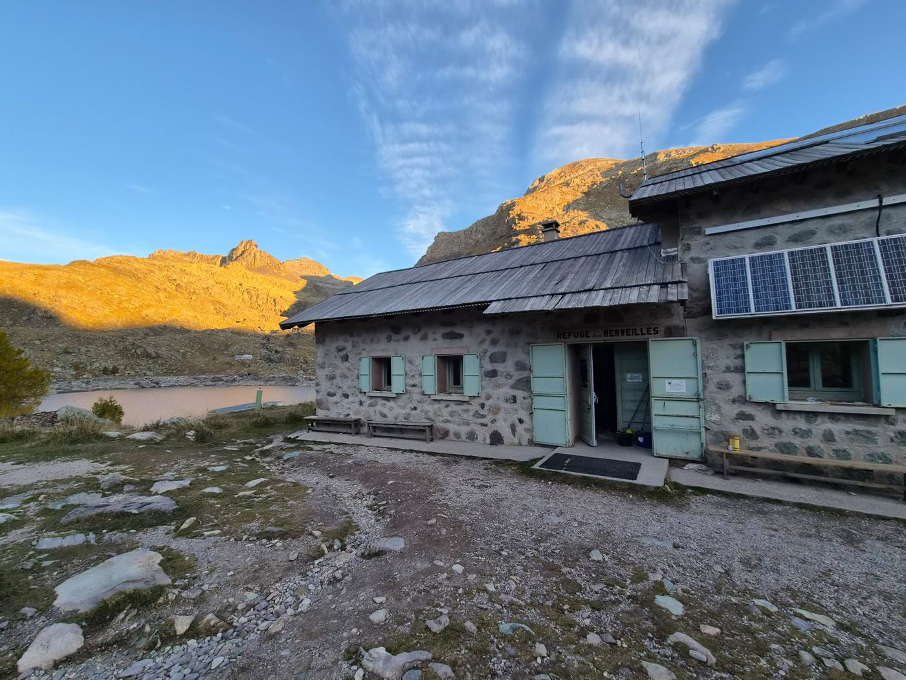
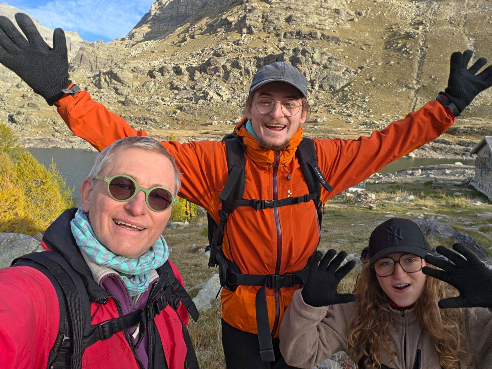
Lever du soleil au refuge, puis départ.
Un des nombreux lacs de la montée.
La Corse, à 220 km, flottant au-dessus de la mer.
En zoom (recadré, contraste légèrement renforcé) : on distingue les sommets, et sur la gauche les quelques rochers du Cap Corse qui émergent des nuages.
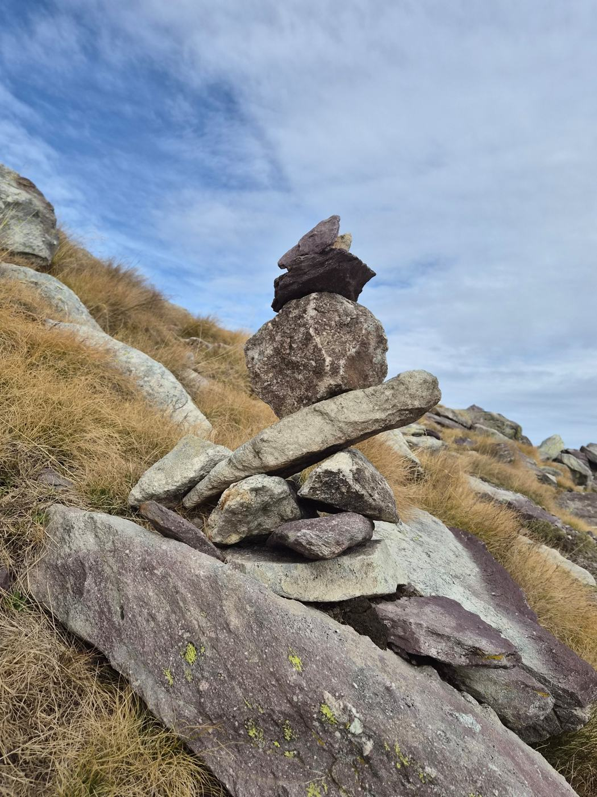
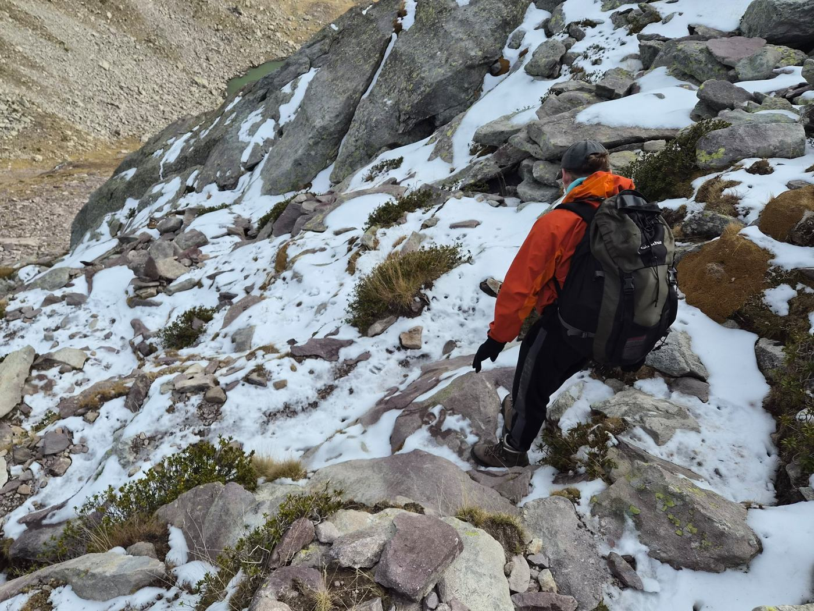
Un cairn, et une descente prudente dans la neige.
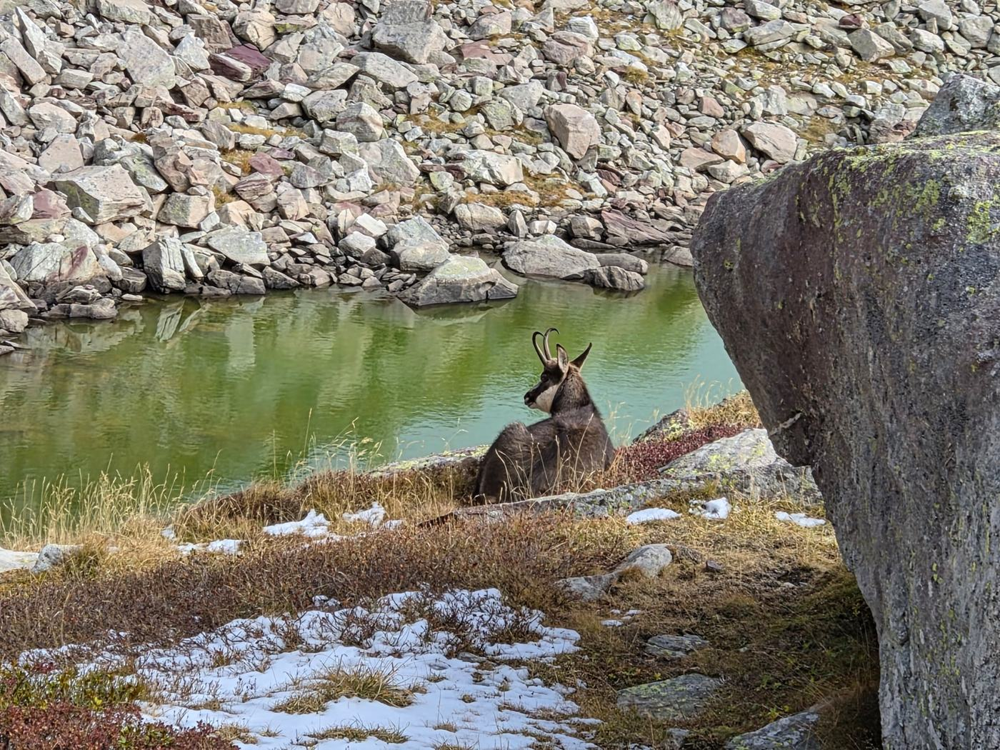
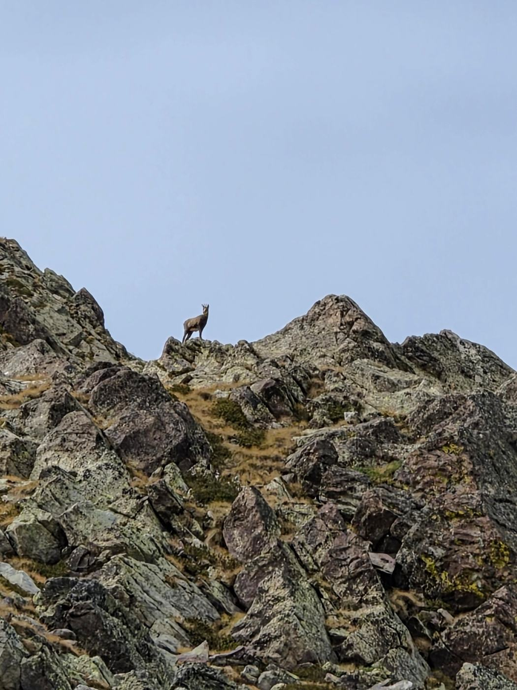
Nos chamois, au bord du lac et sur la crête.
Lundi après-midi
Des semelles qui se décollent et des pâtes aux crevettes
Petit incident de parcours : la semelle d'une chaussure de Céleste (prêtée par mon oncle Jacques) s'est décollée à l'arrière. Ça devrait le faire, pensions-nous. Nous avons continué la descente, avec des séances de ricochets sur les lacs, en cherchant les endroits abrités du vent car les ridules influencent beaucoup les ricochets.
La semelle se décollait de plus en plus, et l'autre a commencé le même sketch. Arrivés au refuge, les deux semelles étaient totalement décollées. Nous avons demandé de l'aide aux gardiens.
Rentrés à 13 h 30, tempo idéal pour le pique-nique. Le choix des pâtes aux crevettes n'a pas fait l'unanimité, et elles étaient très pimentées. Céleste a eu les lèvres en feu pendant une demi-heure.
Je me disais que c'était mort pour la grande boucle du lendemain : avec ces chaussures, nous redescendrions péniblement au lac des Mesches. C'était compter sans Alexandre. Il a demandé sa pointure à Céleste : 41, la même que lui. Il nous a prêté sa paire de secours, et elle allait à Céleste comme une pantoufle.
La douche chaude au refuge coûte 2 euros. Normal, le gaz est héliporté trois fois par saison. Alors, surtout par défi, nous avons pris chacun une douche froide, à la température de la source. À mon avis, autour de 7 degrés. Je suis sorti avec une barre au front après le shampoing. Les autres ont les cheveux longs, ils ne l'ont pas tenté.
La nuit était prévue sous une tente de prêt, car le refuge faisait une désinfection contre les punaises de lit. Le traitement a été plus rapide que prévu et nous avons dormi au chaud. Nous étions dix le soir, très familial, et nous avons même fêté les 20 ans d'un convive. Dodo tôt, réveil à 6 h 30.
Mardi 27 octobre · Jour 3
La grande boucle : Merveilles, trois grands lacs et un très long retour
Départ à 7 h 50, sans traîner. Montée à la baisse de Valmasque par le lac des Merveilles, descente dans quelques centimètres de neige sur la face nord, puis l'enfilade des trois grands lacs jusqu'au refuge de Valmasque. Quelques passages vertigineux au-dessus du dernier lac, le lac Vert.
Pique-nique au refuge, bien meilleur que la veille. Les soupes Royco sont bonnes mais il faut deux sachets, et les pâtes Intermarché sans crevettes sont très acceptables. Quelques ricochets, et nous sommes repartis pour attraper le train de 16 h 52.
Le chemin vers Casterino a paru très long, tout de même agrémenté par une superbe cascade et deux bouquetins peu farouches. Nous avons cherché désespérément un peu de réseau pour réserver un bus « Zest » à la demande. Finalement, après avoir atteint la route, à une allure militaire, nous avons fait du stop pendant une heure. Délivrance quand une voiture s'est arrêtée.
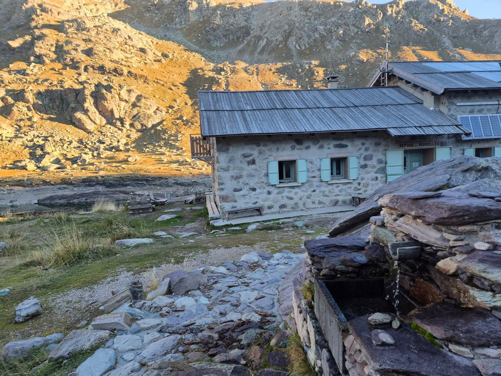
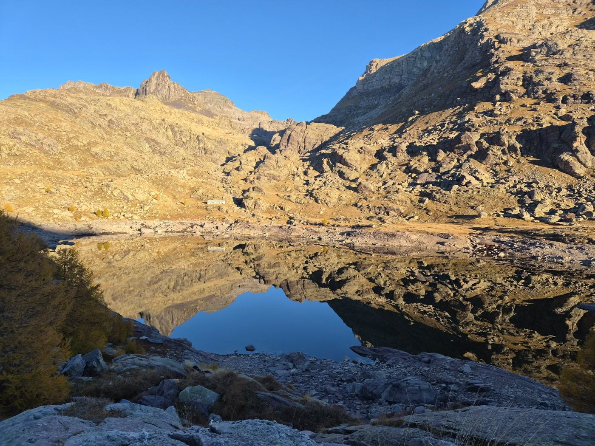
Dernier matin au refuge, et le lac en contrebas.
Notre mot dans le livre d'or du refuge, pour Régis et Alexandre, pour les chaussures et le bon plan de la Corse.
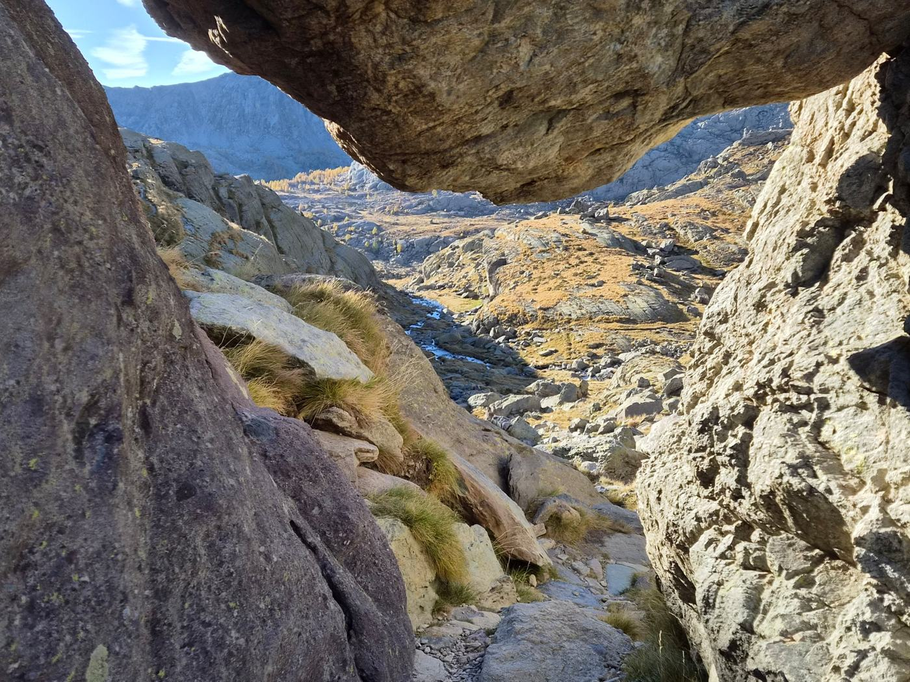
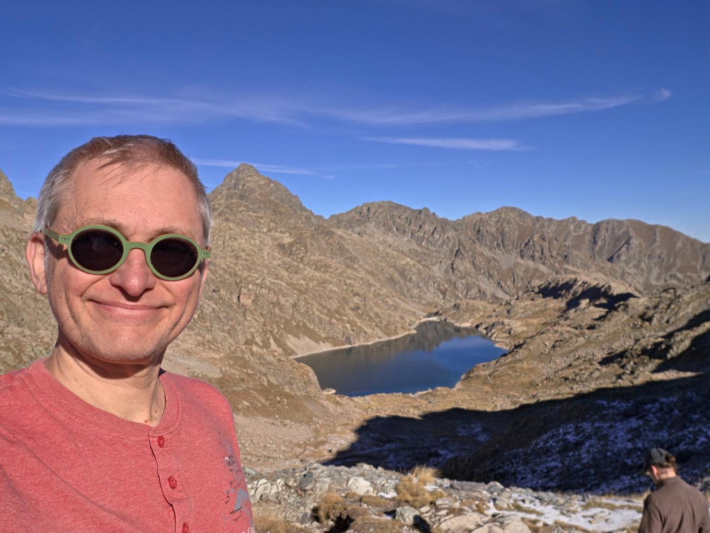
Une fenêtre entre les blocs, et le lac du Basto vu depuis la baisse de Valmasque.
Céleste et Rose au-dessus du lac du Basto.
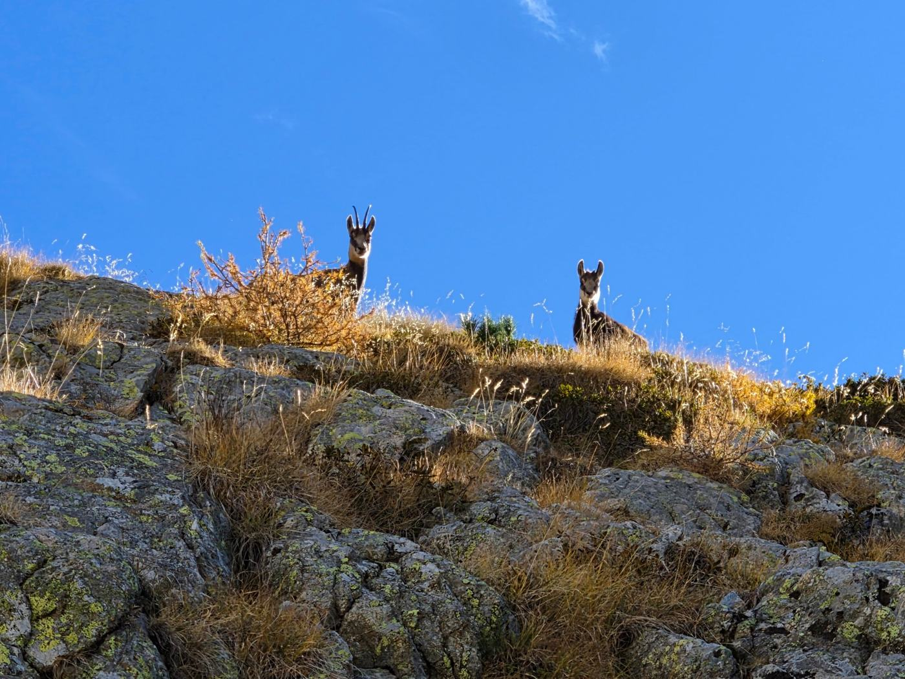
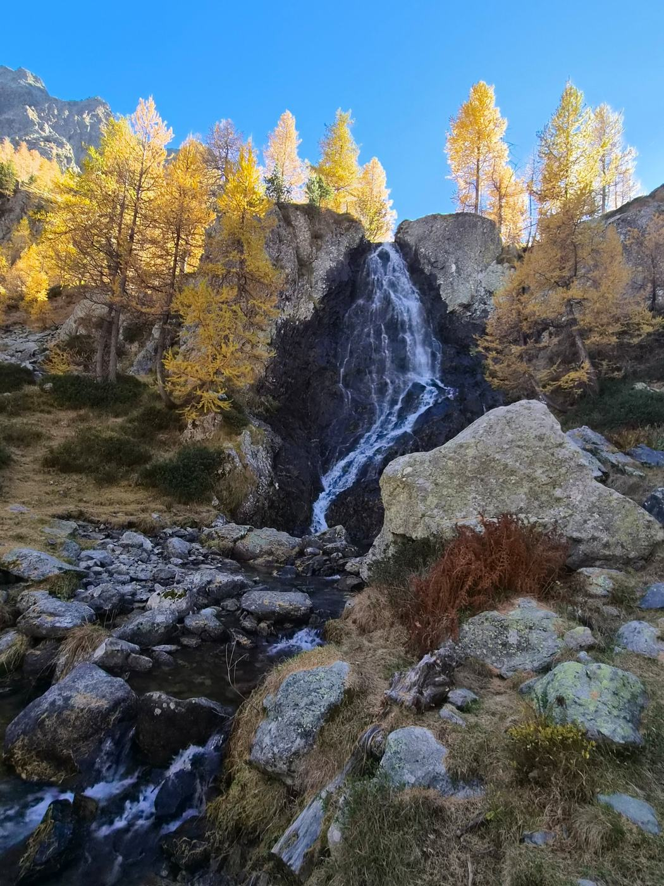
Encore des chamois sur la crête, et la cascade parmi les mélèzes dorés à la descente.
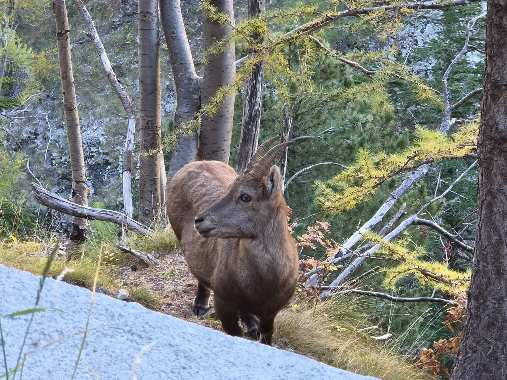
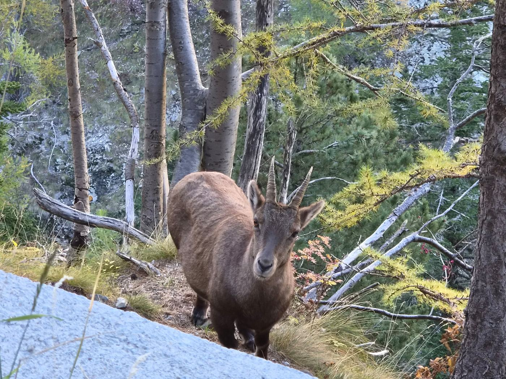
Un bouquetin pas farouche du tout.
Mardi soir
La dame de Saint-Dalmas
C'était une petite dame de Saint-Dalmas qui discutait beaucoup (enfin, je posais aussi beaucoup de questions). Elle est née dans le village et est allée au collège dans la gare mussolinienne, autrefois un internat. Elle raconte ce qu'elle appelle l'annexion de son village en 1947. D'origine italienne, elle a dû parler français à l'école du jour au lendemain. Apparemment, c'est toujours un traumatisme pour elle.
J'en ai parlé le lendemain avec mon oncle Jacques, et j'ai vérifié : le référendum du rattachement a recueilli 92 % de oui. La petite dame était donc une exception quand elle parlait d'annexion. C'est seulement sa vue de la situation ! C'était l'ancien territoire de chasse de Victor-Emmanuel III, gardé par l'Italie lors du rattachement du comté de Nice en 1860.
La dame est aussi une marcheuse, avec ou sans ses copines. À environ 75 ans, elle nous a dit avoir fait la vallée des Merveilles seule quelques jours avant, en gros nos étapes 1 et 3, mais en une journée ! Garée au lac des Mesches, elle a marché dix heures. Chapeau bas.
Nous avons fini par attraper notre train et sommes arrivés lessivés et courbatus. Beau périple.